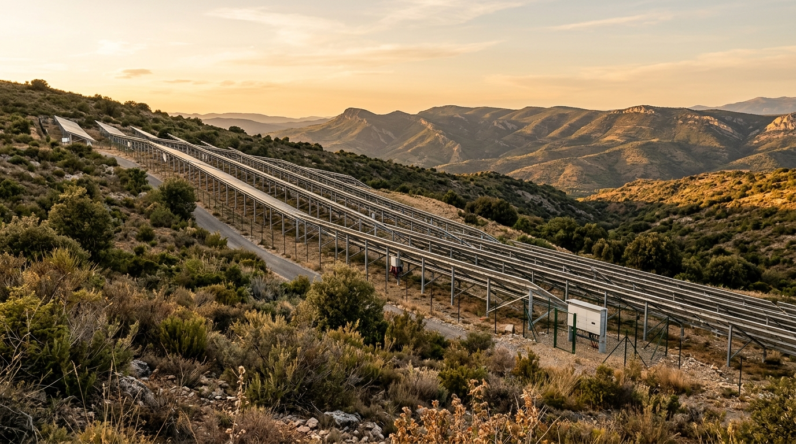

En fördjupad analys gällande etablering av en markmonterad solcellspark på 1–10+ MW i Thézan-des-Corbières, Occitanie. Vi utvärderar risker, affärsmodeller och avkastning (ROI).

Planerad garrigue-mark, Thézan-des-Corbières
Château Corbières omfattar 307 hektar mark, varav ca 270 hektar utgörs av skog och garrigue (busk- och hedmark). Denna garrigue-mark har mycket lågt agrart värde och lämpar sig inte för vinodling, men utgör en enorm dold tillgång för solenergi.
Occitanie är en av Frankrikes mest solrika regioner med över 2 000 soltimmar per år. Att exploatera en mindre del (t.ex. 15–30 ha) för en markmonterad solcellspark skapar en helt ny intäktsström utan att störa slottets historiska estetik eller vinodlingar.
Valet av driftsform avgör investeringsbehovet (CapEx) och risknivån för köparen.
| Kriterium | Arrende-modell (Land Lease) | Egen regi (Direct Investment) |
|---|---|---|
| Initialt CapEx-behov | 0 € (Ingen investering krävs) | ~3,5 – 4,0 miljoner € (för 5 MW park) |
| Operativ risk & Drift | Ingen. Solcellsoperatören (t.ex. Engie/Total) bygger, underhåller och driver parken. | Hög. Köparen bär ansvar för underhåll, slitage samt fluktuerande elpriser (eller PPA-avtal). |
| Årliga driftsintäkter | €90 000 – €150 000 (Garanterad årlig arrendeavgift på ca 30-40 års avtal) |
€350 000 – €500 000 (Bruttoelintäkter före opex och räntekostnader) |
| Payback & ROI | Omedelbar (Positiv avkastning från dag 1) | 7–8 års återbetalningstid (IRR: ca 12–14 %) |
| Slutsats / Rekommendation | Rekommenderas starkt. Ger ett riskfritt och säkert kassaflöde som direkt kan finansiera slottets OpEx och räntekostnader. |
Strategiskt alternativ. Endast intressant om köparen har överflödigt kapital och vill bygga ett fullskaligt energibolag. |
Utöver storskalig inmatning (arrende till nätet) finns en mycket stark potential i att anlägga en mindre, lokal solcellsanläggning (t.ex. 50–100 kW) på uthusens tak eller på garriguen precis intill slottet, avsedd **enbart för fastighetens egen konsumtion**.
Genom att konsumera vår egen el slipper vi köpa el från nätet till det franska konsumentpriset (ca **€0,25/kWh**). Detta gör varje genererad kWh värd mer än dubbelt så mycket som om vi sålde den till elnätet (inmatningstaxa ca **€0,09–€0,11/kWh**). Det sänker de fasta driftskostnaderna för värmepumpar (bergvärme), pooler och hotellkök till nära noll.
Det faktum att två elledningar (HTA) korsar eller gränsar till fastigheten är en stor tillgång. Det innebär att den fysiska nätinfrastrukturen är fullt utbyggd. Egenproduktion för eget bruk kräver inga dyra nätförstärkningar från Enedis sida, och anslutningen sker snabbt och enkelt direkt på fastighetens befintliga abonnemang.
Eftersom solcellsprojektet utgör en bärande ekonomisk pelare för fastighetens långsiktiga lönsamhet, rekommenderar vår juridiska agent att förvärvet av Château Corbières juridiskt villkoras i köpekontraktet (*compromis de vente*).
Affären kan endast slutföras om elnätoperatören (ENEDIS/RTE) lämnar ett godtagbart tekniskt förhandsbesked angående inmatningskapacitet för minst 1 MW. Detta suspensiva villkor skyddar investeraren från att köpa fastigheten om det visar sig att nätanslutningen är tekniskt omöjlig eller orimligt dyr.